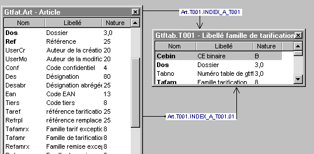
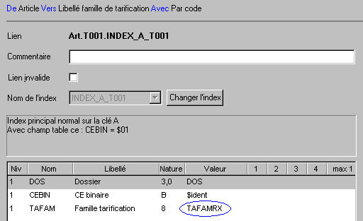
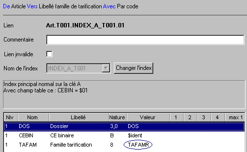
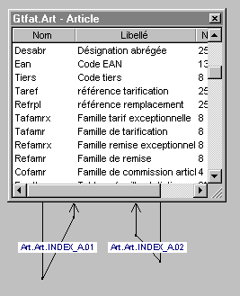
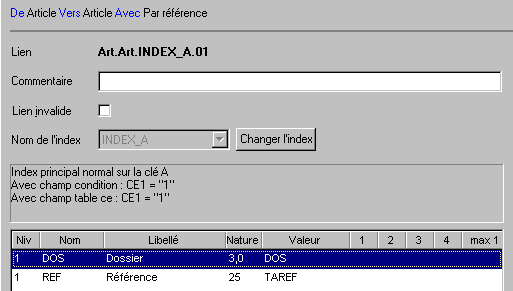
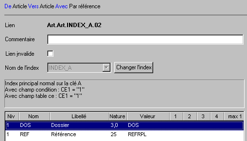

Création automatique
La création des liens peut être faite de façon automatique lorsque vous ajoutez une table dans l’éditeur de liens. Voir Options de l'éditeur de liens .
Il est également possible de créer tous les liens pour un dictionnaire par le choix Créer automatiquement les liens du menu Edition. Ce choix ajoute toutes les tables du dictionnaire et calcule automatiquement les liens. Les tables appartenant à des fichiers temporaires sont ignorées.
Création manuelle
La création manuelle d’un lien peut s’effectuer de deux manières :
Par le choix Créer un lien vers une autre table du menu contextuel des tables (dans l’arbre ou le schéma).
En dessinant le nouveau lien avec la souris. Pour cela, dans le schéma, placez le curseur de la souris près du bord extérieur de la table de départ, enfoncez la touche Ctrl, et dessinez le lien avec la souris vers la table destination.
Création de plusieurs liens entre deux tables
Il est possible de créer plusieurs liens entre deux tables. C’est le cas notamment où la table de départ contient un tableau de valeurs.
Lorsque vous dessinez un lien entre deux tables qui sont déjà liées, une info-bulle apparaît vous indiquant que ce lien existe déjà. Si vous relâchez la souris près de la table de destination, le lien est tout de même créé.
Exemple
Il y a deux liens entre la table Article et la table des « Libellés famille de tarification ». Les deux liens utilisent le même index mais avec un replissage différent.



Création d’un lien avec une seule table
Il est également possible de créer un lien ayant la même table de départ et d’arrivée.
Exemple
Les champs TAREF et REFRPL de la table article sont des codes articles permettant d’accéder à d’autres enregistrements de la table des articles.



Remarques
Lorsqu’un lien est créé, il est créé invalide (marqué en rouge). Pensez à le valider après avoir vérifié ses paramètres.
Lorsqu’un lien est créé, Xwin sélectionne l’index primaire de la table destination et compose le garnissage avec les données de la table de départ qui correspondent aux champs de la clé. Avant de valider ce lien, vérifiez que toutes ces informations sont correctes.
Si votre dictionnaire contient des champs de même nom qui n’ont pas toujours la même signification, utilisez les alias pour que des liens inexacts ne soient pas créés. Voir la remarque sur les alias.
Les liens marqués de couleur verte indiquent une surcharge. Voir Surcharge des liens .